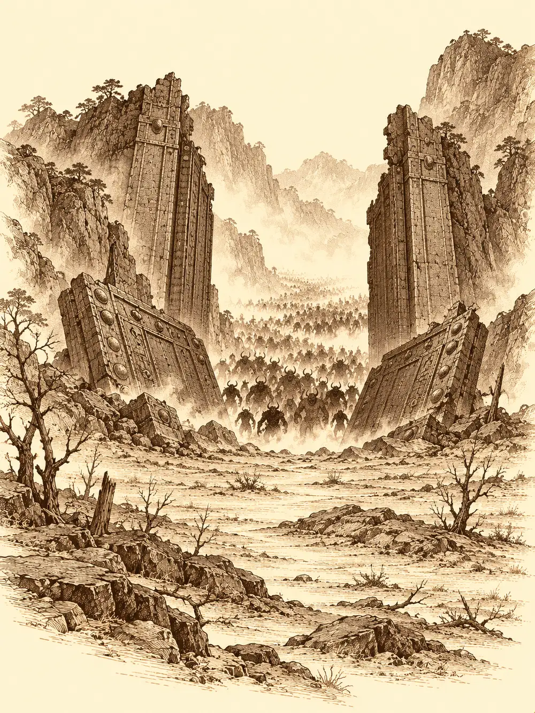

Capítulo 129
La Puerta Negra se abre
Libro VIII · El hilo maldito
Aquella semana nadie en Kuroto comió lo que necesitaba. Los cazadores se levantaban con las piernas pesadas y los ojos hundidos, y el hambre se les quedaba en las rodillas todo el día como una piedra en el zapato.
Gur no había vuelto a ver a ningún cazador desde que se comió a su maestro. Había llevado unas katanas al herrero para que pudiera seguir trabajando para el pueblo y luego había regresado al refugio de las montañas donde el pequeño demonio rojo le había dado su última lección. Allí se le había ido la rabia de las manos. Había destrozado lo que quedaba en pie y había quemado el resto con aquel fuego nuevo que todavía no sabía gobernar. Pasó días y noches sentado entre las ruinas, en el sitio exacto donde lo había perdido.
Ikari tampoco andaba por la base. El tanuki llevaba tiempo metido en sus propias pesquisas sobre la Puerta Negra, sobre si seguían usando a los suyos en aquellas invocaciones, y había dejado de beber tanto. Pero cuando llegaron a Sho dos samuráis con un aviso del general Hati, solo los encontraron a ellos dos. Algo pasaba en la puerta. Los soldados de vigilancia habían dado la alarma.
Cruzaron el portal hacia el campamento del sur y salieron a un hormiguero. Los soldados corrían de un lado a otro, recogían armas, se gritaban órdenes que nadie terminaba de escuchar. Hasta la taberna se había quedado casi vacía.
Encontraron a Kurobane entre las tiendas. O a lo que caminaba con su cuerpo. Desde que había hablado con Danifae había recogido sus cosas de la base de Sho y se había vuelto a su refugio del sur, buscando a Katari sin encontrarla y tratando de averiguar cómo se entraba en cierto plano. Cuando Ikari le contó a qué venían, la sombra le subió por el brazo desde debajo de la capa, le cubrió media cara y le dejó un ojo de un azul total y una sonrisa que le llegaba a la oreja. La voz del muchacho y otra más grave hablaron a la vez.
"Ambos tenemos una misión contra el demonio que hay detrás de esa puerta. Pero si nos acercamos demasiado a esa energía, no creo que volvamos".
Gur, mientras tanto, había entrado en la taberna con el estómago rugiendo. La tabernera le sirvió un cuenco de arroz pequeñísimo, y él descubrió por el camino, con la ayuda de una larga conversación, la diferencia entre alquilar una cama y comprarla. La mujer acabó apuntando ideas en un papel: alquilaría también las sillas, las mesas y los cubiertos. Gur pagó una moneda de oro y le prometió traerle algo de caza cuando encontrara.
"Anímate, que se te ve cabizbajo", le dijo ella.
"He tenido días más felices".
Ikari entró gritando que se fueran de una vez, que había una puerta a la que llamar. Gur se bebió de un trago lo que quedaba en el cuenco.
Tardaron dos o tres horas en subir. Las laderas eran escarpadas, llenas de rocas que se clavaban en las suelas, y a medida que ganaban altura empezaron a ver, a lo lejos, la mancha negra de la puerta entre las montañas. En el puesto avanzado que el general había montado allí cerca encontraron soldados cargando carros a toda prisa. Algunos se sujetaban la cabeza como si les doliera, otros parecían a punto de perder el juicio. Ikari detuvo a uno.
"¡La Puerta Negra!", le gritó el hombre, y lo apartó de un empujón para seguir huyendo ladera abajo, como todos los demás.
Entre aquel desorden apareció Banzo. El goliat acababa de volver al sur con ayuda de Gelbreak y se alegró de verlos con una alegría corta, de las que no tienen tiempo para más.
"Somos muy pocos. No podemos perder a nadie hoy".
Llegaron a la puerta. Algunos ya la conocían: una muralla de piedra negra metida en la montaña y, a los lados, dos estatuas colosales, un buey y una especie de caballo, cada uno con el arma en alto. Durante meses aquellas armas habían ido bajando, poco a poco, sin que nadie supiera qué significaba. Ahora bajaban del todo. La espada y el garrote golpeaban el suelo, clon, se levantaban un poco y volvían a golpear, clon, y la juntura entre las dos hojas de la puerta empezó a brillar de un rojo de brasa.
Gur se acercó y llamó con el puño, dos golpes, como en cualquier casa. Banzo llegó corriendo y lo apartó de la puerta a empujones.
"No la toques. Si la tocas y te quedas paralizado, estamos muertos". Lo sujetó por los hombros. "Tienes que liderarnos hoy".
"Yo no estoy para liderar".
Gur se apartó, se sentó en una roca y sacó un papel y algo con que escribir. Ikari arrastró a los demás detrás de unas piedras, convencido de que aquello iba a reventar, y se hizo una bola de pelo detrás de la más grande. Los ojos de las dos estatuas se encendieron de rojo. La piedra negra que las cubría empezó a resquebrajarse como pintura seca, desde la cara hacia abajo, y se desprendió a trozos. Los guardianes cayeron de la puerta al suelo, vivos, enormes, los mismos que algunos de ellos habían visto en el abismo, y soltaron un bramido que hizo temblar la montaña.
El rugido sorprendió a Gur cuando trazaba la última letra, y la mano se le fue. En el papel ponía sensei.
Las lágrimas se le volvieron llamas. La boca empezó a supurarle fuego. Creció, enrojeció, le brotaron los cuernos, y Banzo e Ikari, que no lo habían visto así nunca, se quedaron mirando a aquel demonio ardiente con la maza al rojo que un momento antes había sido su compañero. Detrás de los guardianes, la puerta empezó a abrirse. Primero asomaron unos dedos por la rendija, forzándola desde dentro. Luego empezaron a salir cosas pequeñas y chillonas, corriendo.
Kurobane se metió en la sombra de una roca y salió de ella como si fuera agua, con media cara sonriendo. La espada oscura se hundió en uno de los demonios y el puño libre lo dejó doblado y sin aire, y luego volvió a esconderse. Banzo escaló un peñasco con la furia encendida en la piel, para atraer desde arriba a los pequeños y alcanzarlos con sus arpones; el primero se lo arrancó una criatura del cuerpo como quien se quita una espina. Ikari soltó a su perro de sombras y lanzó una bola de fuego que apenas hizo nada: aquellos seres soportaban la magia como piedras.
Los demonios pequeños gritaban. Sus chillidos eran como uñas en una pizarra, se metían en los oídos y aturdían, y además parecían dar fuerzas a los grandes. Uno le gritó a Gur al oído. Gur le contestó con un mazazo que lo aplastó contra el suelo, luego otro al que tenía al lado, y se plantó en medio del revuelo esperando al siguiente.
El buey desapareció. Se borró del aire como si se hubiera ido a otra parte del mundo y reapareció junto a Ikari, golpeándolo. El caballo atacaba con la espada y las patas. Alguien había llenado el lugar de oscuridad, y los enemigos se movían en ella mejor que ellos, hasta que Osuray encontró a la criatura que la sostenía y le rompió la concentración de un golpe. Banzo saltó desde su roca sobre uno de los adversarios. A uno de los demonios menores le bastó mirarlo y chillarle para meterle un miedo que no era suyo.

Los golpes del caballo fueron dejando a Gur al límite. Cuando cayó, no cayó del todo. Su cuerpo estalló. Una explosión de fuego salió de él en todas direcciones y alcanzó a los enemigos, a los aliados y al perro de Ikari, y cuando se disipó, el campeón seguía de pie entre el humo, como si su furia solo hubiera dado un grito.
El perro de sombras fue el que remató al buey que Gur quería para sí. La criatura murió reventando en otra explosión, y la explosión volvió a prender a Gur, que aguantó también esa. Pero ahora miraba a su alrededor buscando a quien le había robado la presa. Había visto ese perro antes en alguna parte. No recordaba con quién. Le pareció que una figura que se movía entre sombras tenía que ser su dueño.
"Ese perro no es mío", dijo Kurobane.
Gur no lo escuchó. Lo atacó, y la figura sombría se escapó como pudo, se encaramó a una roca y se escondió allí, malherida, sin poder razonar con él.
Ikari volvió a llamar a su perro y consiguió, con un hechizo, dejar inmóvil al guardián que quedaba. Gur destruyó al perro de un golpe y siguió golpeando al enemigo paralizado. Banzo, desde el otro lado, le gritó que atacaran juntos, que él lanzaría el arpón y Gur tiraría de la cadena.
Gur agarró el arpón y se lo clavó en el propio cuerpo.
Explotó otra vez. Esta vez no se levantó. Se quedó tendido entre las piedras, ennegrecido, respirando apenas. Ikari puso fin al guardián con una magia que pudre la carne desde dentro, y la muerte de la criatura soltó una última explosión que los alcanzó a todos.
Se hizo un silencio extraño. Nadie tenía con qué curar a Gur. Fue entonces cuando la figura de Kurobane bajó de su roca, despacio, con mucho cuidado, y le tendió a Banzo una de sus pociones. Banzo se la metió al semiorco en la boca hasta la garganta.
Gur estaba en otra parte. Un paisaje de montañas muy verdes y arroyos limpios, y en medio un ser pequeño y rojo que conocía bien.
"¿Qué haces tú aquí? ¿Estás haciendo el imbécil? ¿Para eso te dejé yo mi poder? Anda, despierta".
Le soltó una colleja, y Gur abrió los ojos con sabor a poción en la lengua.
"¿Qué ha pasado? Estaba el sensei".
Banzo lo abrazó llorando, agitándolo como a un saco, dándole cabezazos de puro alivio. Gur se dejó sacudir. Dijo que ahora se sentía raro cuando se enfadaba. El maestro seguía muerto. Pero él no se había ido con él.
Ikari se había quedado mirando la puerta. Las dos hojas negras habían caído al suelo y por el hueco se veía lo que había al otro lado: un páramo desolado que se perdía más allá de la vista, montañas negras como no había visto nunca, y por aquella tierra muerta una mancha que se movía hacia ellos. Eran criaturas de todo tipo, tantas que parecían millones, una marea que avanzaba como una estampida.
"Si nos quedamos aquí, morimos".
Pensaron en cerrar el paso, en derribar algo, en ganar aunque fuera unos minutos. No había tiempo para nada de eso.
"¡Corre, Kurobane!", gritó Banzo. "¡Avisa a todo el mundo!".
La figura sombría salió disparada montaña abajo. Banzo agarró a Gur del brazo, y como Gur no terminaba de levantarse, tiró de él por un pie.
"Pero yo me quiero pegar con ellos".
"Que no. Son millones. Vamos".
Bajaron corriendo por las laderas. Lo último que vieron al volver la cabeza fue la Puerta Negra abierta de par en par, sin estatuas a los lados y con las hojas tendidas en el suelo, y por ella una oleada de demonios y criaturas horribles que nadie había visto jamás, saliendo a la carrera hacia Kuroto.
Kurobane llegó al campamento sin aliento. El general mandó encender las almenaras, y una tras otra, de cumbre en cumbre, las hogueras fueron llevando hacia el norte la noticia de que la puerta había caído. Desde las montañas bajaban ya miles de criaturas.
La isla entera se puso en marcha. Ikari intentó reagrupar a los soldados dispersos. Palayer levantó defensas. Archi recorrió las aldeas con su carreta sacando a la gente de sus casas, y a la vuelta montó con los ingenieros cuatro catapultas. Arwen llamó a los animales del bosque para que hostigaran a los demonios, cavaran zanjas, distrajeran a los voladores y cargaran a los heridos hasta el puesto de Guxi. Jin se ocupó de que ningún soldado peleara solo. Sirth levantaba a los caídos como muertos que volvían a la lucha y golpeaba con su magia de muerte. Hayate llegó siguiendo las almenaras y descargó rayos sobre la horda. Chilia, la shadar-kai, disfrutaba del espectáculo y se llevó a Arwen a una altura desde la que la niña podía dirigir mejor a sus bestias.
Kurobane y Osuray acordaron luchar juntos. Se abrieron paso entre los enemigos, y en un momento en que un tengu de los grandes estaba a punto de alcanzarle el cuello, una flecha de Danifae se lo quitó de encima. Desde la retaguardia, las catapultas empezaron a disparar.
En Sho, Banzo salió del portal cargando niños y ancianos y gritando a los civiles que se refugiaran en las montañas del norte: la puerta había caído y Otakemaru avanzaba desde el sur. Gelbreak tenía otro plan, uno que no quería pronunciar en voz alta por miedo a la matrona, y para eso necesitaba a Calista y la espada demoníaca que guardaban los oficiales del sur. Banzo la encontró en palacio, rodeada de pergaminos. Ella mandó a un criado avisar a la shogun para que declarara la alarma y quiso quedarse organizando la ciudad. Gelbreak llegó, le señaló las marcas de sus manos y le pidió que confiara en él. Calista aceptó, aunque les recordó que había una invasión.
En la tienda de mando del campamento, Hati organizaba los puestos avanzados y el muro. Recordó que Aka había ordenado tener allí aquella espada por lo peligrosa que era. Calista le enseñó su insignia de administradora, le argumentó que quienes no combatían en primera línea necesitaban otros medios para ayudar y, ya que estaba delante del mapa, le propuso partir la oleada con un grupo fuerte en forma de tridente para que la infantería y los arqueros pudieran trabajar. El general aprobó el consejo y les dejó llevarse el arma. Gelbreak metió la vitrina entera en su bolsa mágica. Recogieron a Palayer en las defensas y, de vuelta en Sho, se les unió Kazuki.
De regreso desde las montañas, Guxi y Serafina vieron una almenara encendida. Él se quedó un momento paralizado, entendiendo lo que significaba. Ella le cogió la mano, le recordó que lo que viniera lo afrontarían juntos y lo besó. Guxi la cargó y voló hasta la base tan deprisa que le dolió el cuerpo. Allí convocó dos pequeños robots vestidos de soldados, le pidió a Serafina que cargara con un baúl de herramientas y ungüentos, y los dos se marcharon por el portal hacia el frente.
Lejos de todo aquello, en un bosque apartado de Sho, cinco personas formaban un círculo. Gelbreak había dibujado en el suelo un pentágono con glifos de la Reina Araña, usando una reliquia de Lolth, la espada demoníaca y la protección de Palayer. La tierra se volvió tela. La tela se rasgó. Del agujero oscuro brotó una luz violeta que fue tomando forma de portal.
"Esto es peligroso", dijo el drow. "Preparaos".